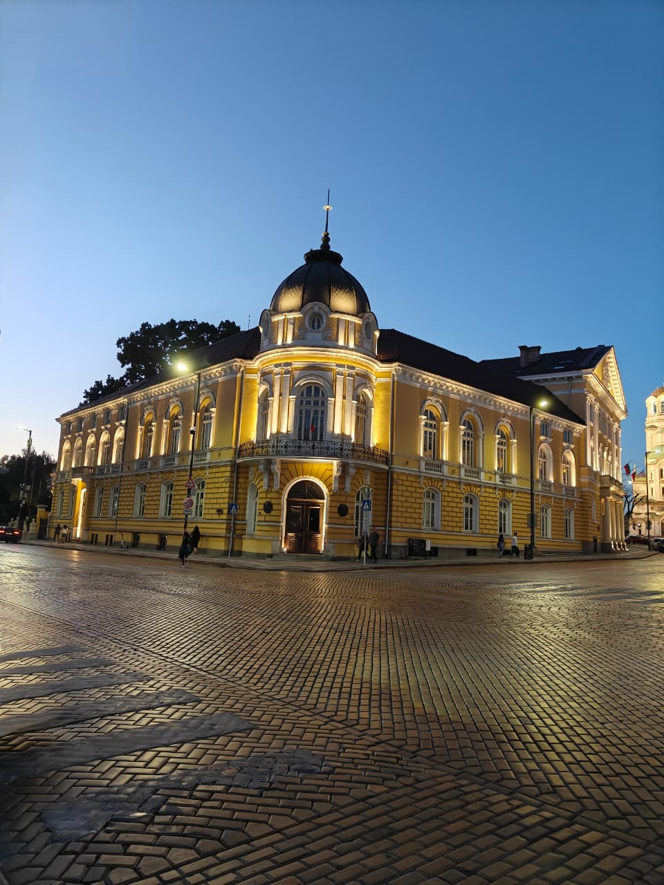

The Bulgarian Academy of Sciences (abbreviated BAS; Bulgarian: Българска академия на науките, Bŭlgarska akademiya na
naukite, abbreviated БАН) is the National Academy of Bulgaria, established in 1869.
The Academy, with headquarters in Sofia, is autonomous and consists of a Society of Academicians, Correspondent Members
and Foreign Members. It publishes and circulates different scientific works, encyclopaedias, dictionaries and journals, and runs
its own publishing house.
The activities are distributed in three main branches: Natural, mathematical and engineering sciences; Biological, medical and agrarian sciences
and Social sciences, humanities and art.
They are structured in 42 independent scientific institutes, and a dozen of laboratories and other sections.
Julian Revalski has been the president of the BAS since 2016. As of 2022, its budget was 119,860 million leva (€61.28 million).
Bulgarian Academy of Sciences, Sofia
